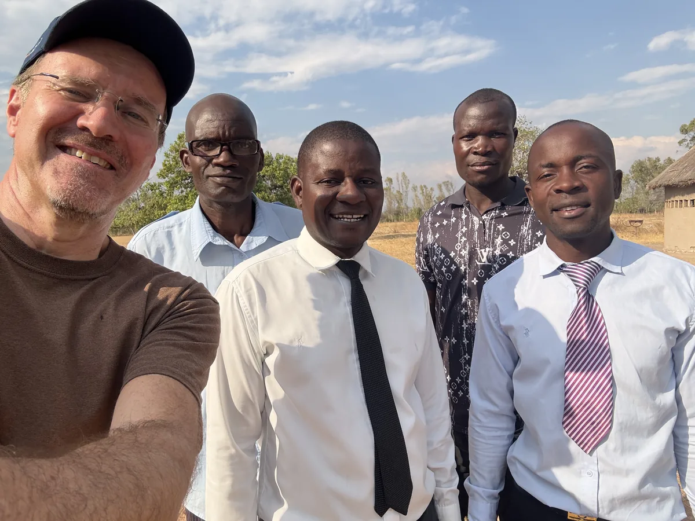
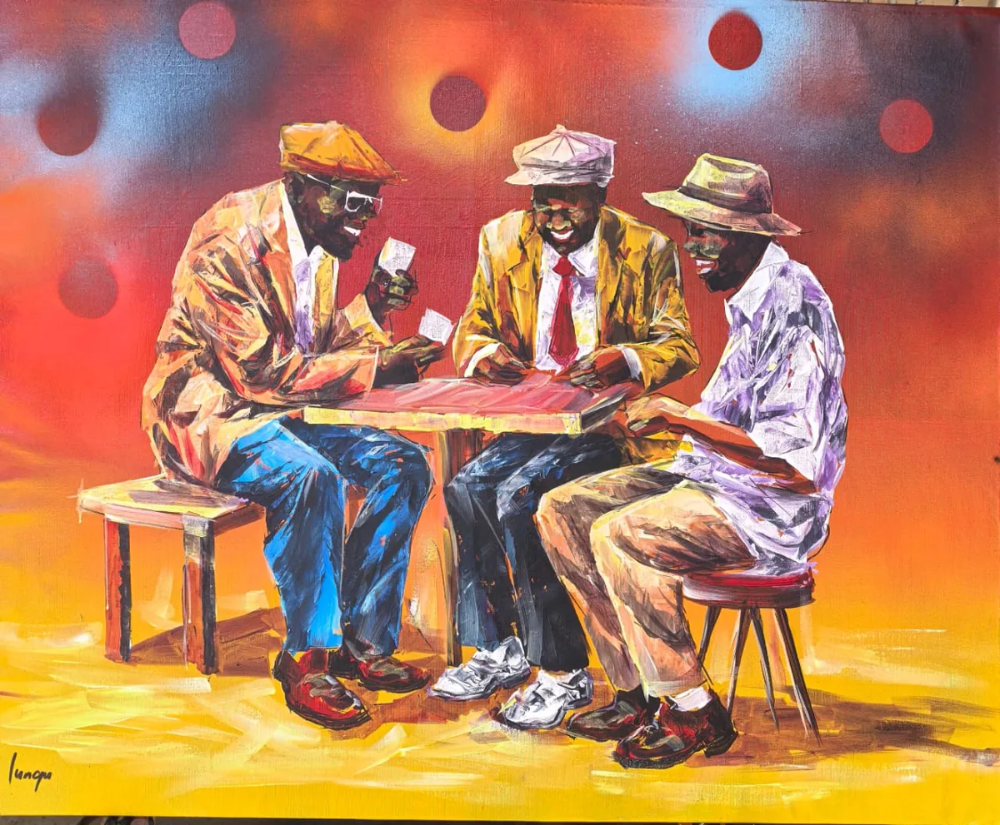
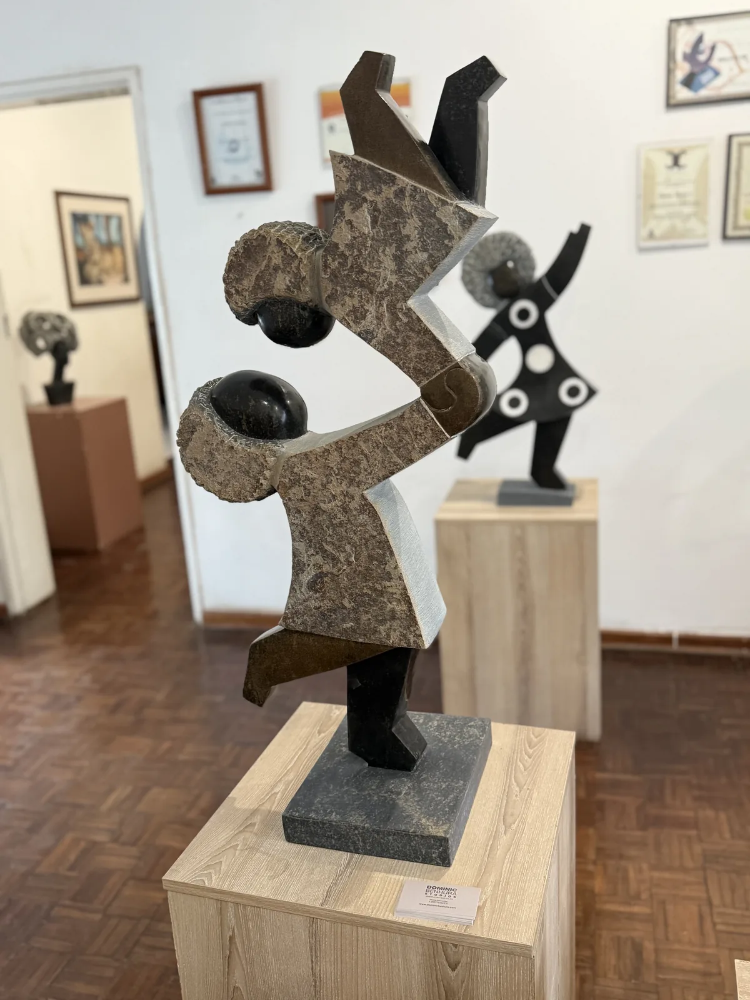
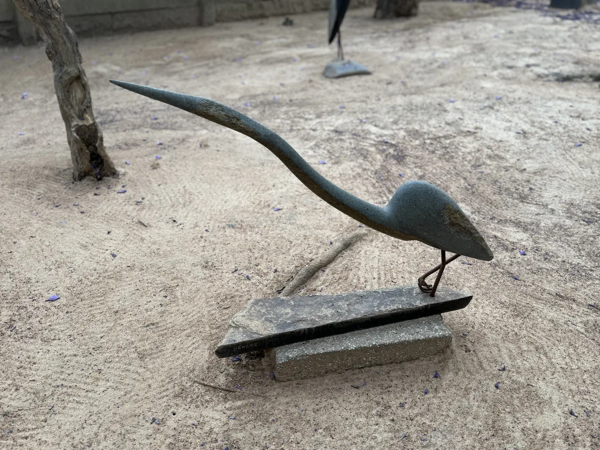

direkt in Projekte investiert, weil Verwaltung, Reisen und Büro privat getragen werden.

Seit über 25 Jahren in Simbabwe
Von Hilfe zur Selbstständigkeit.
Wir sind keine Sammelstiftung. Wir arbeiten mit vertrauten Partnern vor Ort, damit aus Ernährung, Wasser und Bildung ein Weg in dauerhafte Eigenständigkeit wird.
01
Ernährung ist der Einstieg.
Ein voller Bauch macht Lernen, Spielen und Entwicklung überhaupt erst möglich.
02
Wasser ist die Grundlage.
Brunnen und Solartechnik schaffen Zeit, Hygiene und die Basis für Schulgärten.
03
Eigenständigkeit ist das Ziel.
Gemeinden tragen Projekte selbst weiter, wenn die ersten Hürden überwunden sind.
Wirkung
Was wir gemeinsam erreicht haben
Zahlen erzählen nur einen Teil der Geschichte. Dahinter stehen Kinder, Lehrerinnen, Eltern, Schulen und Partner, die jeden Tag Verantwortung übernehmen.

12.000
Kinder erhalten täglich Nahrung, Betreuung und frühe Bildung.
Schulen und Partner arbeiten über den Kapnek Trust eng mit uns zusammen.
Brunnen: drei im letzten Jahr, fünf weitere in diesem Jahr in Umsetzung.


Hilfe zur Selbsthilfe
Jeder Brunnen ist ein Schritt in Richtung Unabhängigkeit.
Viele Schulen hatten bisher keinen verlässlichen Wasserzugang. Mit Brunnen, Tanks und Solartechnik entsteht mehr als Versorgung: Es entstehen Schulgärten, Zeit für Unterricht und die Möglichkeit, eigene Einkommensquellen aufzubauen.
- Wasser für Küche, Hygiene und Unterrichtsalltag
- Gärten als sichtbarer Anfang von Eigeninitiative
- Projekte, die von Gemeinden getragen werden
Fundament
Weiterentwicklung, kein Neuanfang.
Doris und Hans Herz haben die Stiftung mit dem Wunsch gegründet, unkompliziert und direkt zu helfen. Heute führt die nächste Generation diese Arbeit weiter: persönlicher, transparenter und mit dem klaren Ziel, Hilfe langfristig überflüssig zu machen.
Dieses Vertrauen ist gewachsen. Es entsteht aus vielen Jahren Erfahrung in Simbabwe, aus persönlicher Präsenz vor Ort und aus Partnern, deren Entscheidungen aus den Gemeinden selbst kommen.
Mehr über die Stiftung
Persönlich vor Ort
Regelmäßige Besuche sichern Nähe, Vertrauen und ehrliche Rückmeldungen.

Kapnek Trust
Unsere wichtigste Verbindung zu Schulen, Familien und Gemeinden in Simbabwe.
Unterstützen
Gemeinsam Zukunft gestalten.
Einmalig oder regelmäßig: Jede Spende wirkt direkt und ohne Verwaltungskostenabzug.
Bildungs-Start
20 €
Ermöglicht einem Kind ein Jahr warme Mahlzeiten und frühe Förderung.
Jetzt spenden
Gruppen-Impact
60 €
Versorgt drei Kinder und entlastet Familien wie Schulgemeinschaft.
Jetzt spenden
Wasser-Technik
250 €
Hilft bei Solartechnik, Leitungen und Wasserzugang an Schulen.
Jetzt spenden
Starthilfe Autarkie
500 €
Bringt Schulen dem nächsten Schritt zu Garten, Wasser und Eigeninitiative näher.
Jetzt spendenJeder Euro hilft
60 € können viel bewegen.
Damit erhalten drei Kinder ein Jahr lang tägliche Schulspeisung.
Unser Arbeitsprinzip
Persönlich, partnerschaftlich, konkret.
Keine generischen NGO-Floskeln. Wir zeigen, wie wir denken und warum wir handeln.
Vertrauen statt Distanz
Unsere Partner kennen die Gemeinden, Entscheidungen und Wege vor Ort.
Null Verwaltungskosten
Reisen, Büro und Verwaltung werden privat getragen. Spenden gehen in die Projekte.
Ehrliche Entwicklung
Eigenständigkeit entsteht nicht über Nacht. Wir benennen Chancen, Risiken und Lernwege.
Projekte
Wirkung vor Ort.
Echte Orte, echte Menschen, echte Veränderung.

Wasser
Wasser & Unabhängigkeit
Solarbetriebene Brunnen sind der Startpunkt für Schulgärten, Hühnerprojekte und neue Verantwortung in den Gemeinden.

Bildung
Schulspeisung & frühe Bildung
Tägliche Mahlzeiten geben Kindern Kraft, Konzentration und einen sicheren Start.

Gesundheit
Rehabilitation & Inklusion
Therapie, Begleitung und Begegnung für Kinder mit besonderen Bedürfnissen.
Vor Ort
Wasser verändert den Alltag sofort.
Die Videos zeigen, warum Brunnen mehr sind als Infrastruktur. Vorher bedeutete Wasser lange Wege und tägliche Eimerarbeit. Nachher wird Wasser zum Anfang von Versorgung, Hygiene und Selbstständigkeit.
Vorher: Wasser muss getragen werden
Nachher: Wasser an der Schule
Vor Ort in Simbabwe
Wir sehen selbst nach.
Transparenz ist gelebte Praxis. Reiseberichte erzählen, was wirkt, was schwierig bleibt und welche Begegnungen die nächsten Schritte prägen.
 Reise 2025
Reise 2025
Warum Wasser der erste Schritt ist
Von Schultagen ohne fließendes Wasser zu neuen Möglichkeiten für Küche und Garten.
 Reise 2024
Reise 2024
Starke Mütter, mutige Väter
Wie Familien und Partner vor Ort Lösungen entwickeln, die zu ihrem Alltag passen.
Partnerschaft
25 Jahre Vertrauen
Von den ersten Begegnungen bis zu einer Zusammenarbeit, die weiter wächst.



Kunst
Kunst ist eine Brücke.
Kunst ist für uns kein Nebenprojekt und kein reiner Fundraising-Kanal. Simbabwe hat Künstlerinnen und Künstler hervorgebracht, deren Arbeiten weltweit Anerkennung finden. Für uns ist Kunst Ausdruck von Respekt: Begegnung auf Augenhöhe, Interesse an Kultur und eine Verbindung zwischen Menschen in Simbabwe und Deutschland.
Zur KunstgalerieRespekt zeigen
Sprache öffnet Türen.
Neben Deutsch soll die Stiftungsperspektive auch auf Englisch und in Shona zugänglich werden. So bleibt sichtbar, dass Herz HD Deutschland und House of Stone USA getrennt arbeiten, aber dieselbe Haltung teilen: partnerschaftlich, direkt und respektvoll.